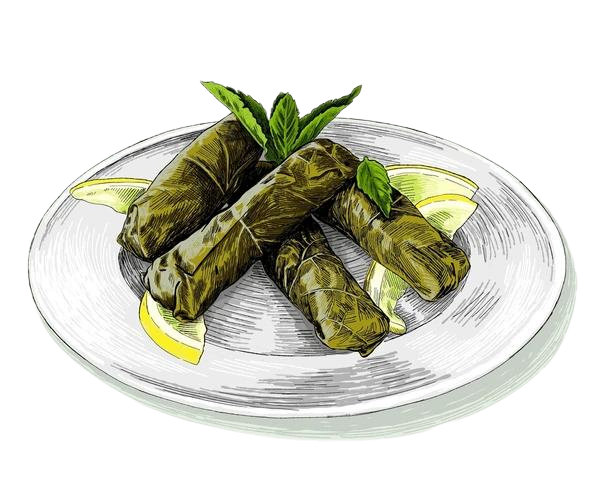

Dolma Recipe
Grape leaves stuffed with rice, pine nuts, and herbs.
Ingredients
For the Filling:
- 1 cup long-grain rice (washed and drained)
- 1/2 lb (225g) ground lamb or beef (optional; can be made vegetarian)
- 1 medium onion, finely chopped
- 2 cloves garlic, minced
- 2 tablespoons olive oil
- 1/4 cup pine nuts (optional)
- 1/4 cup currants or raisins (optional, for sweetness)
- 1 teaspoon ground allspice
- 1 teaspoon ground cinnamon
- 1 teaspoon dried mint (or fresh mint, finely chopped)
- 1 teaspoon dried oregano
- Salt and pepper, to taste
- 1 tablespoon tomato paste
- 2 tablespoons fresh parsley, finely chopped
- 1 tablespoon fresh dill (optional, for a fresh flavor)
- 1 tablespoon lemon juice
- 1/2 cup vegetable or chicken broth (for cooking)
For the Grape Leaves:
- 1 jar (12 oz) grape leaves in brine (about 30-35 leaves)
- Water (for blanching the grape leaves)
For the Cooking Liquid:
- 1/2 cup olive oil
- 1/2 cup lemon juice (about 2 lemons)
- 2 cups vegetable or chicken broth
- 1 teaspoon salt
Preparation Time
- Prep time: 30-40 minutes
- Cook time: 40-50 minutes
- Total time: ~1.5 hours
Instructions
- Prepare the Grape Leaves:
- If using jarred grape leaves, rinse them well under cold water to remove the brine and excess salt.
- Bring a pot of water to a boil, and briefly blanch the grape leaves (about 2-3 minutes), then drain and set aside to cool. If the grape leaves are too large, you can trim the thicker stems off.
- Prepare the Filling:
- In a large pan, heat 2 tablespoons of olive oil over medium heat.
- Add the chopped onion and garlic, and sauté until softened and translucent (about 5 minutes).
- Add the ground meat (if using) and cook until browned. If you're making a vegetarian version, skip this step.
- Stir in the rice and cook for 2-3 minutes to toast it lightly.
- Add the tomato paste, pine nuts, currants (if using), mint, oregano, cinnamon, allspice, salt, and pepper. Stir to combine.
- Pour in the broth and bring the mixture to a simmer. Cover and cook for about 10 minutes, until the rice is slightly tender but not fully cooked.
- Remove from heat, stir in the chopped parsley, dill (if using), and lemon juice. Let the filling cool slightly.
- Stuff the Grape Leaves:
- Lay one grape leaf flat on a clean surface, vein side up.
- Place a spoonful of the filling (about 1-2 tablespoons) near the base of the leaf.
- Fold in the sides of the leaf over the filling, then roll it up tightly, folding from the base upwards like a burrito. Be gentle, but firm, to ensure it doesn’t unravel.
- Repeat this process with the remaining leaves and filling.
- Cook the Dolma:
- In a large pot, arrange the stuffed grape leaves in layers, starting with the seam side down.
- In a small bowl, combine the olive oil, lemon juice, broth, and salt, and pour this over the dolma.
- Place a heavy plate or lid on top of the dolma to keep them submerged in the liquid while cooking.
- Cover the pot and bring to a simmer over medium-low heat. Cook for 40-50 minutes, until the grape leaves are tender and the rice is fully cooked. You may need to add more water or broth if the liquid evaporates before the dolma is done.
- Serve:
- Allow the dolma to rest for 10 minutes before serving, so the flavors can meld.
- Serve warm or at room temperature with a drizzle of olive oil and a side of yogurt or a squeeze of fresh lemon.
Dolma is a flavorful and comforting dish, with tender grape leaves wrapped around a spiced rice filling, often accompanied by ground meat, pine nuts, and currants. Whether served as an appetizer, side dish, or main course, these stuffed grape leaves are a beloved part of Turkish cuisine. They are often paired with a refreshing yogurt dip and fresh lemon wedges for an added burst of flavor! Enjoy!